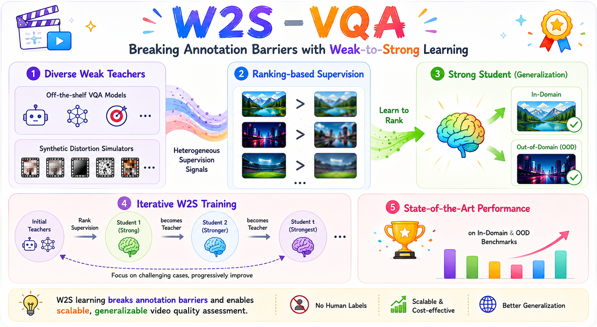
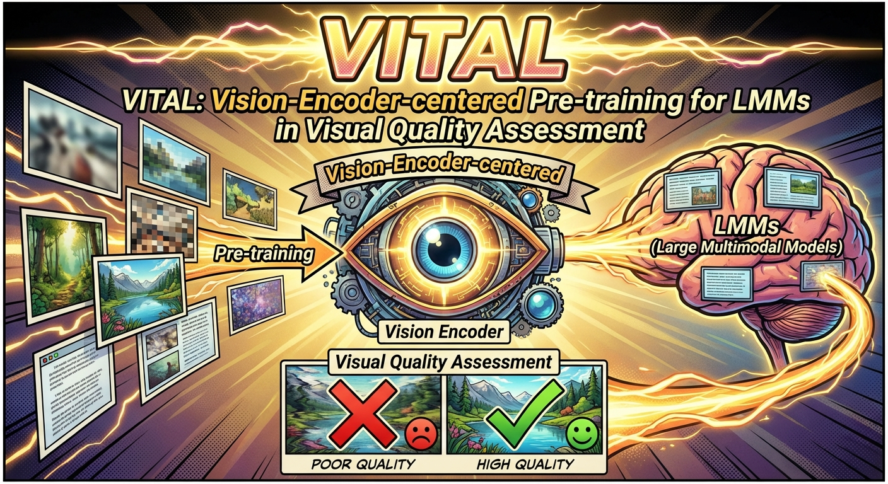
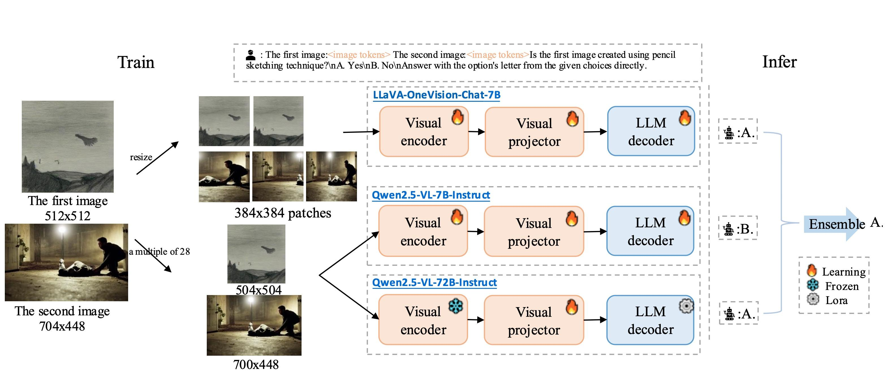
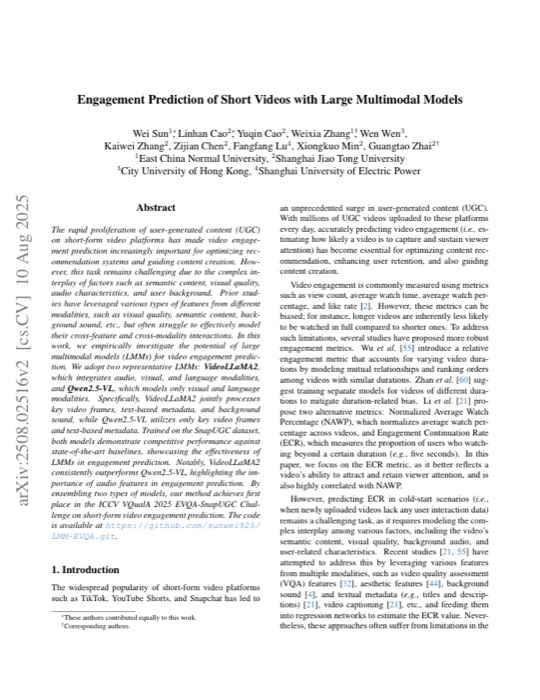
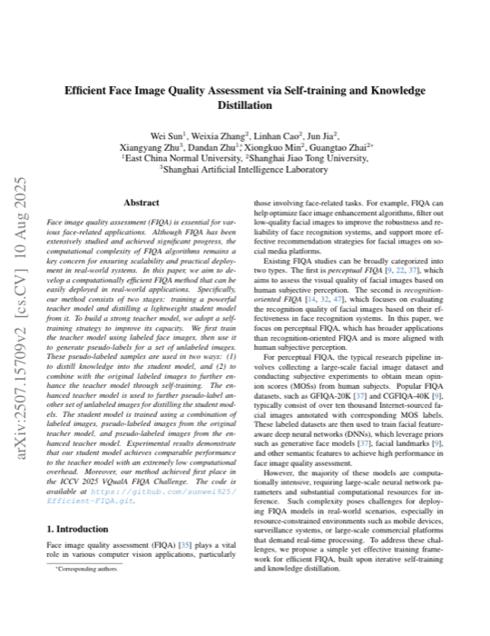
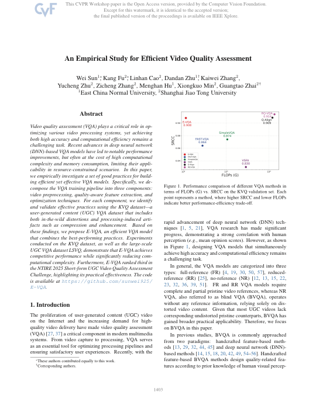
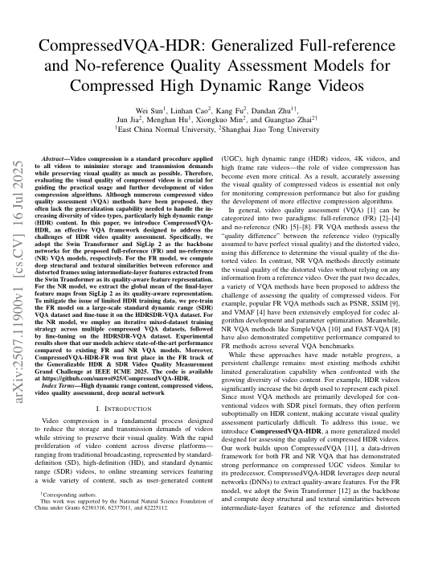
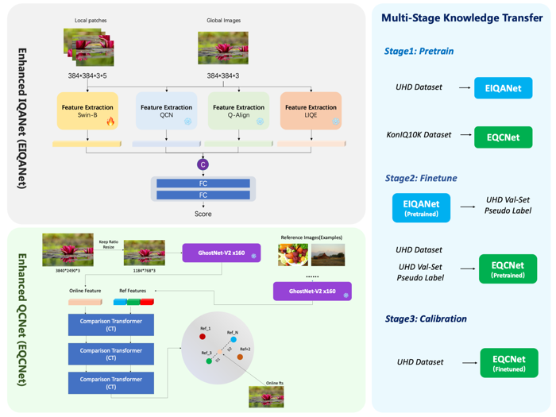
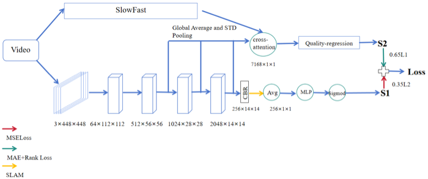
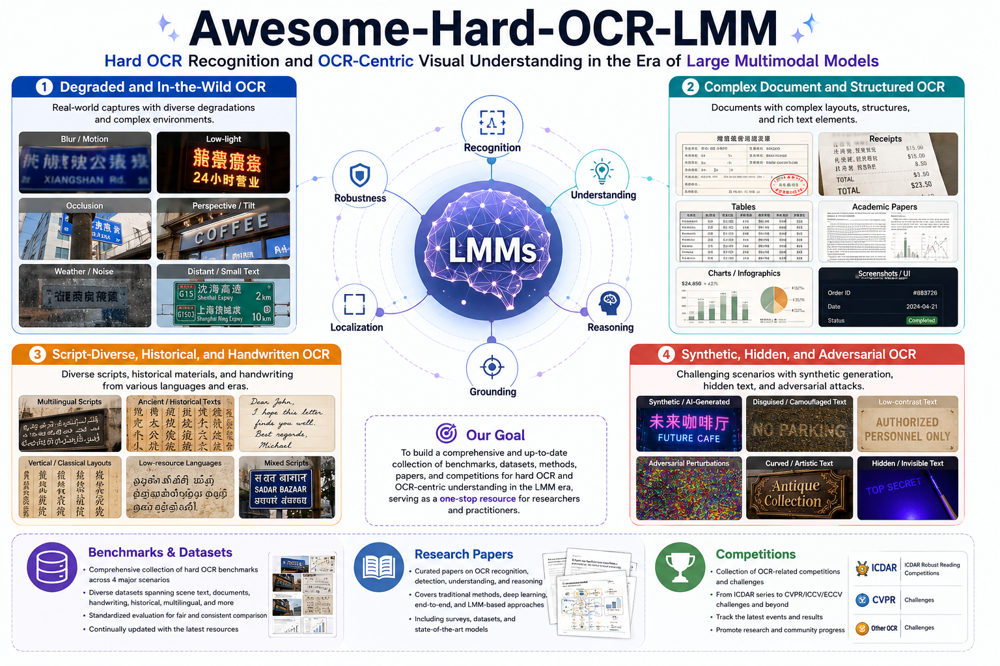

Linhan Cao 曹淋涵
I am currently a master's student in Information and Communication Engineering at Shanghai Jiao Tong University (SJTU), where I started in Fall 2024. I also received my bachelor's degree in Information Engineering from SJTU.
My research interests include Large Multimodal Models, Visual Quality Assessment, and Visual Perception.
I have published first-author and co-first-author work at CVPR, AAAI, and ICIP, and have participated in visual quality assessment challenges at CVPR, ECCV, ICCV, and ICME.
I am expected to graduate in 2027.03, and I am currently on the job market!
Please feel free to contact me via Phone / WeChat / Telegram: (+86) 15190891339.
📖 Educations
- 2024.09 - 2027.03 (Expected), Master in Information and Communication Engineering (Shanghai Jiao Tong University)
- 2020.09 - 2024.06, Bachelor in Information Engineering (Shanghai Jiao Tong University)
💻 Internships
- 2026.04 - 2026.09, Ant, Ant Star Plan A Top Talent Program. Research on adversarial OCR robustness; built a benchmark covering 14 attack scenarios and an automated data synthesis pipeline, and developed a two-stage OPSD + RL training framework.
- 2025.09 - 2026.03, Kuaishou, Image and Video Processing & Analysis Group. Research on fine-grained video quality assessment for generative video enhancement and content-adaptive encoding.
- 2023.12 - 2024.08, Xiaohongshu, Experience Strategy Group. Developed the RedVQA 2.0 algorithm for live-streaming and short-video quality assessment, built databases spanning multiple scenarios and resolutions, and deployed the model in production.
📝 Selected Publications
Please see Google Scholar for the complete publication list.

VQAThinkerReasoning with RL
QualiRAGRetrieval-Augmented VQU
arXiv 2026
QualiRAG: Retrieval-Augmented Generation for Visual Quality Understanding
A training-free framework that augments visual quality understanding in large multimodal models through multi-source quality knowledge and dynamic retrieval.
SG-JNDSemantic-guided Compression
ICIP 2024 · Oral
SG-JND: Semantic-Guided Just Noticeable Distortion Predictor for Image Compression
A semantic-guided JND predictor that fuses multi-level features with cross-scale attention and achieves leading performance on public JND datasets.
Other Publications
- CVPR 2026 Adapter Shield: A Unified Framework with Built-in Authentication for Preventing Unauthorized Zero-Shot Image-to-Image Generation▤ Paper
- ESWA 2026 Enhancing Blind Video Quality Assessment with Rich Quality-aware Features▤ Paper
- arXiv 2025 DLADiff: A Dual-Layer Defense Framework against Fine-Tuning and Zero-Shot Customization of Diffusion Models▤ Paper
- ICCVW 2025 Engagement Prediction of Short Videos with Large Multimodal Models▤ Paper
- ICCVW 2025 Efficient Face Image Quality Assessment via Self-training and Knowledge Distillation▤ Paper
- ICMEW 2025 CompressedVQA-HDR: Generalized Full-reference and No-reference Quality Assessment Models for Compressed High Dynamic Range Videos▤ Paper
- CVPRW 2025 An Empirical Study for Efficient Video Quality Assessment▤ Paper
- ECCV 2024 Assessing UHD Image Quality from Aesthetics, Distortions, and Saliency▤ Paper
Competitions

1st PlaceVisual Quality Comparison for Large Multimodal Models Challenge
Team ECNU-SJTU VQA; Team Leader.
Paper
1st Place
1st Place
3rd Place
1st Place
1st Place
1st Place📚 Open-source Projects

Awesome-Hard-OCR-LMM
CodeA curated collection of resources, datasets, and research on OCR-capable large multimodal models in challenging and adversarial scenarios.
🎖 Honors and Awards
- 2025 National Scholarship (国家奖学金)
- 2025 Outstanding Student (三好学生)
- 2024 First-class Graduate Academic Scholarship (一等学业奖学金)